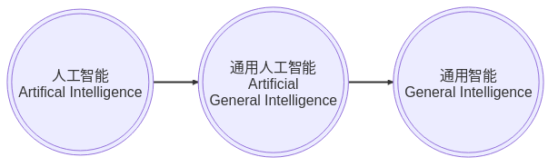
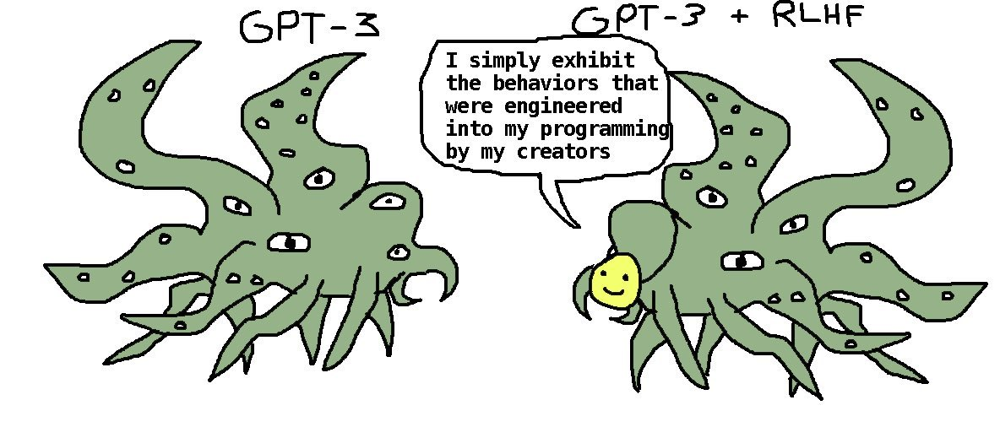

基础模型与应用
:ID: 1437587c-eae9-4a7f-a5f5-adec9f5b96aa
签到
概述
(“基础模型”, “人脑”） ∈ “通用智能”

- 基于神经网络的基础模型体现了不同于人类的智能
- 更大的意义：基础模型触发了对智能认识的演化： “不能用黄油做的刀切黄油”
- 人工智能作为一门学科：“智能是什么？” –> “智能可以做什么？”, 更好的研究方法，避免无谓的哲学讨论和不着边际的空谈。
- 机器学习是主要的方法
- 基础模型是工具：更重要的是启示智能的本质。
理解是应用的前提
- ✅ 智能（Intelligence）
- ❎ 安全（Safety)
- ❎ 校准（Alignment）
两层含义
- 智能本身：网络架构的选择可能是偶然的，可以不是变形金刚模型
- 神经网络模型：偶然之中的必然。结构符合物理现实
安全与校准：
- 法律法规限制应用模型的能力
- 测试
- 许可证
发明还是发现？
- ❎ 用神经网络 构造 人工智能
- ✅ 借助神经网络 发现 智能的现象和规律
- 不是方法进步了，而是现实发生了改变。现实是最强的推动力！
- Ilya Sutskever irreducible arguments:
- 前提：大而深的神经网络可以表现智能（人脑）
- 大而深的模型（卷积网，LSTM，Transformer）
- 描述某个任务（图像识别，自然语言理解）的大量数据（完整，不一定要很规整）
- 训练方法（优化，工程资源）
“简单” ≠ “容易”❗
- 看似简单，接受很慢
- 简单的思想/方法不容易被接受
- 演化的思想是从生物学，简单而不容易，慢慢渗透
- 简单而影响深远的思想：应用广泛，在不同的领域！(奥妙)
- Simple Transformer: attention, mlp, 计算饱和度高 (高效使用硬件)，消息传递机制，图神经网络，多头注意力。
工程意义
基础大模型是模型高能力的根源
- GPT3, GPT4 成本“让人流泪（Eyewatering）”!
- LLaMA
- 七百四十万 A100 机时 （856 年, 15M$)
- 基础模型大而高效
- 大模型不是充分的，但是必要的
- Sam Altman: to raise $100 billion, 2022 deficits 0.5bio, 700k~1m/daily (inference) for GPT-3
- https://www.mosaicml.com/blog/training-stable-diffusion-from-scratch-costs-160k#:~:text=We%20estimated%20an%20upper%2Dbound,model%20card%20from%20Stability%20AI.
- 费用涵盖测试，迭代 x4
- Stability AI 5400x2 月, 总费用 x4(测试，专家迭代, 15M$ x4),
- Stability AI for Stable Diffusion V2:
- 79K A100 机时， 160K$; V1 300~400K$,)
- 费用涵盖测试，迭代 x4
- LLaMA: Apache 2 License!
- Georf Hinton: 1 万亿连接 (人类大脑 100 万亿连接，神经元几十亿))
- Forward-Forward ≺ Back-Propagation (Jeff Hinton)
AGI 发明 👉 电力/汽车/原子弹发明
- 新技术的出现社会的进步
- 并非尽人皆知
- 增大自回归模型+扩大训练🔜 通用人工智能!!!
- 暗流涌动的大变革前夜
- 人工智能被誉为新时代的电力
- 电力有坏处：
- 触电危险
- 基础设施昂贵
- 消灭旧的行业,产生新的行业和职业
- 汽车发明，（普及，你不用别人也会用，先后问题，经验积累的问题）
- 电力有坏处：
- 没有人可以准确预测：甚至对基础模型开发者，震惊 Shock!!!
- Google Brain 2017 Tensor2Tensor, 构建多模态大型网络 （Aidan Gomez)发明了 transformer 架构，构思 10 年前已有，inevitable
- 未出现模态塌缩
- 预测下一个单词—> 类似 AGI,推理能力
- 5 年前无人可以预料：也许包括 OpenAI
- 需要进一步理解和研究 LLMs
- Google Brain 2017 Tensor2Tensor, 构建多模态大型网络 （Aidan Gomez)发明了 transformer 架构，构思 10 年前已有，inevitable
AGI 寒武纪大爆发
自然选择 R&D vs. 人类工程 R&D
— Daniel Dennett
- 基础设施
- 搜索
- 应用及软硬件开发方式
- 寒武纪时期最明显：自然选择作为设计师
- 丰富多彩的演化
- 无序
- 盲目
- 代价，大量的淘汰
- 没有竞争力的被淘汰
- 被动适应性演化
- 能动性演化（理解，分析）
- 最终会少数优势种群会兴盛，也会有不完美
- 科学和工程研究实际上是自然选择的反向工程， 人工智能研究更是如此。
- 丰富多彩的演化
- Sam Altman @Y-Combinator: 投资于指数级增长技术
- 基础设施：工具链，模型结构，云端设施（Azure,GCP,AWS，硬件架构，移动端应用(搜索，内容助手），智能助手（Siri, Alexa,…），开发，编程语言（mojo)，部署
- 搜索：perplexity.ai,you.com,Google,Bing
- 对信息，软件技术应用：技术代际的变化，取代工程式的迭代方式
- Mobileye, … 现有检测技术已经落后
- 不仅是性能，计算优化上进步，LLM on Rhasperberry Pi, 4bit Quantization)
- 演化，即自然选择
如何解释“浮现性能”
- 浮现性能
- 理解能力
- 常识
- 智能的物理学
- 实验发现，非理论可预测
- 量变到质变
- 一种理解：对新现实的理解角度，反思还原论（Reductionism）
- 宏观上规律性，从微观上迭代可能会有无穷无尽的复杂度 （传统系统论，并非更好）
- 牛顿力学之前的造房造桥 所有已知的知识/事实/规律的结晶（映射）
神经网络的计算机模型
- 图灵机
- 冯诺依曼型，哈佛型
- 自回归神经网络
- 内存类型不同，无冯诺依曼瓶颈
- 计算不同 👉 芯片?
- 图灵机：
- 计算机从根本上是概念的产物
- 抽象概念设计，反证了不可计算性
- 软件计算机，最宽泛的定义 -> 冯诺依曼工程化
- 冯诺依曼瓶颈
- transformer 可能是一个过渡类型
- 英伟达的万亿市值
基础模型的实质
- 所有知识（现有）/现实/规律的映射
- 联合概率分布
- 语言构造的世界模型
- 网络结构反映了现实的抽象属性
- 问答形式的使用（推理）是一种信息检索
- 信息长度，压缩比率—>推理，记忆
- 界面是内嵌！现实映射到一维内嵌序列。
- 向量数据库（Pinecone)：查询，检索（预测），
- 语言与现实
- 五蕴（人类存在的 5 个基本元素）色（5根，五官感知，眼耳鼻舌身） vs 受（感受，感知在头脑中的映射，聚类），个人理解，群体；概念 BoW 聚类
- 实体/概念：内嵌向量
- 智能的组成部分和前提，连接到现实世界的纽带。
- 现实的重要抽象属性：代数，几何
- Abstraction/Classic (Symbolic AI & boolean) , Prototype（Vector space), Functional space (manifold), Symmetry-based (Group, transformation invariant)
- 神经网络模型的数学机理
- 代数（符号，向量空间）：大小，顺序，因果，组合，结合
- 几何（对称，流形）
- 变形金刚模型：代数（attention，内嵌) + 几何（位置编码）
- 机器学习（深度学习）AlexNet 与基于规则系统的数据库的区别：精确匹配 vs. 采样
- 神经网络模型的数学机理
多模态应用和统一的内嵌
- 模态： 语言，图像，视频，音频
- 内嵌
- 通信/沟通效率更高
- 训练/检索的效率更高
- 编码事实和常识（facts & common sense)
- 无需同步的多模态数据，通过图像作为媒介，可分开训练
- 生成模型（理解，掌握概率分布，假设/推理的基础）
- 信息和智能的物理学
- 内嵌在更高的抽象层
- 现实是本体，感受中只有内嵌（qualio, 受，吸收现实样本不同模态的采样）
- 异步的训练：联合分布概率通过单个的边缘概率学习，插值
Meta ImageBind
- 多模态（图像，文本，音频，视频，红外成像，IMU）联合监督学习
- 训练数据无需完整 6 个模态同时同步采集
- 训练数据样本之间可以异步采集
- 性能远超单模态方法（基于图像的传统方法和深度学习模型）
- 根据音频生成热带雨林或农贸市场的照片
- 根据声音/文本分割图片（尖叫声紧急定位盲区行人）
应用
- 推理
- 在应用上的适配（提示工程）
- 编程模式的变更
- 应用算法开发
- 适配网络模型
- SFT 局部修改与更新
- 附加网络
RLHF （奖励模型 & PPO）
👉 DPO （Direct Preference Optimization)
- 算法理论
- 算法：开源开放的社区
- 按要求/收益/难度从低到高升序排列
- 推理：基础模型作为强大的预言师，但是需要提问者理解领域知识和背景 & 理解基础模型
- 学会提问，提示工程！
- 构造链式思路提问，
- 构造自主式提问智能体（Agent）
- SFT:改进模型
- DPO 无需奖励模型
- 开源来源：
- Meta, HuggingFace (TIMM),StabiltyAI(Lucid Rains),Google,OpenAI,DeepMind,大学
- 原理，代码，模型
- 和世界上最聪明的开源贡献者交流，90%开发者在开源社区
- 算法：增加序列长度;transformer 之后，计算优化（稀疏化）; attention 改进和替代机制
基础模型与助手模型的修格斯模因

- 基础模型 GPT
- 助手模型 ChatGPT
推理
技术栈
- Web/App 对话界面
- App/IDE 插件
- 程序接口：
- 前端
- 单独界面（Web: Flask, Streamlit）
- IDE, OA 插件接口
- UI 逻辑层
- 后端
- API 接口（OpenAI, OpenPilot, Google Bard)
- 向量数据库接口
- 算法逻辑层：CoT/ToT/Agent/提示模板库/检索
- 前端
提示工程
- 神经网络的采样
- 基础模型作为解码器
- 数据库查询
- 克服 Transformer 模型对话长度的限制（8~32k）
- 构造外部长时记忆接口（向量化数据库）和处理逻辑（LangChain）
- 程序化数据适配模式：私有数据内嵌，向量化存储
- 数据库连接(LlamaIndex),数据查询，
- 预测下一个单词，自回归迭代可以处理语句和段落。本质是文件补全！ document completion,条件概率。
- 基础模型（GPT3.5/GPT4, Palm2)
- 助手模型（ChatGPT,Bard,LaMDA,OpenPilot）: 通过 SFT, RLHF 适配人类对话
- 最大可能的概率的答案，并不一定是你想要的最优答案。
- 条件很重要！提示工程的结构,增加条件“你智商达到 120/你是一个 Python 编程高手”
- 应用程序接口, 库是最佳接口（形式化语言）
提示工程的算法

- 对话形式 Input-Output Prompting
- 链式思路 Chain-of-Thought
- 树形思路 Tree-Of-Thought 👉 AlphaGo
- etc.
- 打开算法的大门。算法模块接口
自治智能体(Sovereign Agent)
- AutoGPT
- BabyGPT
- 一种编程模式，研究值得关注
应用意义不大 不是大模型的问题，是自动逻辑过于简单。
客制化
适配（Fine-Tuning)
Everyone should learn to fine-tune LLMs.
—Mark Tenenholtz
- GPT-4 是一个冻结模型
- 通用，但是在特殊领域上非最优
- 开销大
- 基础模型只是解码器
- 数据是根本
- 静态，知识<2021.09
- 太通用，在特殊领域未优化
- 让领域问题适配基础模型相当于削足适履
- 生成的部分很多应用不需要，很多其他领域不需要
- 提炼，缩小模型尺寸
- 编解码是更有效的内嵌提炼方式
- 数据集维护和更新非常重要
- 数据的质量
基于检索（Retrival）客制化基础模型
- 基于客制化向量数据库的增强检索
- 端到端检索增强的基础模型
- 基于向量化数据库
- RAG retrieval augmmented generation P. Lewis, Meta end-to-end
训练与适配
- 基础大模型“从头开始”训练（GPT4, Llama）
- 大数据集
- OpenAI ~200 Engineers (Google 2000+)
- 几千 GPUs,几个月
- 监督适配训练/高效参数适配训练（SFT/PEFT）
- 良好的小数据集
- 1～100 GPU
- 小模型在特定领域性能（算数）可以超过大模型
- LoRA 训练 👉 QLoRA (2x4090,24h@16bit)
- LLM-Adaptor
- Attention 替代算法
- FlashAttention
- State Space 模型
- RNN
- 基础大模型训练非常昂贵，可能只会有一两家
- 适配是活跃的应用领域
- QLoRA (16 Bit, 48GB memory, 2x4090， 24h)
- 改进/替代 Attention 值得关注
提炼 distillation 与适配 （高质量数据获取）
- Alpaca 7B
- teacher: GPT3 Davinci-003 –> student LLaMA 7B
- 175 种子对话–> 5.2 万生成数据–> SFT
- 费用<$500
- Vicuna 13B
- teacher: ChatGPT –> student LLaMA 13B
- 7 万对话数据（ChatGPT）
- ~$300, @ 8xA100, 24h
- GPT4 评估
- Koala 13B
- teacher: ChatGPT & others –> student LLaMA 13B
- ShareGPT, Alpaca, Anthropic, OpenAI WebGPT & Summarization ~41 万
- @ 8xA100, 2 epoch, 6h, <100$
- Guanaco 7B
- MPT, OpenPilot
- Red Pajama 1.2 万亿 token
- ShareGPT 3 万+HC3 2.4 万+其他开源对话数据集（OIG 3 万+Alpaca 5.2 万+Anthropic 16 万+OpenAI WebGPT 2 万+OpenAI Summarization 9.3 万
基础设施
- 云端（训练 & 推理）
- GCP,Azure,AWS
- 向量数据库 API
- 搜索 API
- 移动端（推理）
- 软件开发
- 前端：Web （Flask, Streamlit），应用插件 Slack/微信/钉钉
- 大型语言模型 API 接口 (OpenAI， Bard)
- 本地
- 服务器
- 本地向量数据库
- 编程模式
- Arjan OpenAI example
- in termimal start jupyter server
- FrontEnd with StreamLit Example
- LangChain Example
- LANGCHAIN jupyter notebook
- pandas ai
护城河
- 是否推进？
- 如何推进？
- 如何判断推进是否过早，投入是否过大？
- 应用的现实？
- 收益有多大？
- 技术具备？
- 安全性？
- 可行的改进开销有多大?
想想电力，汽车发明之初的情况
表格文本分析：
- OA 文件，钉钉，企业微信
- 小程序，App 客户数据（表格，文本）分析，总结，查询
- 行为
- 偏好
人工核验，减少工作量
娱乐系统（自然语言接口 HMI，系统，软件）
- 需求文档生成（系统，软件）：自然语言应用接口
- 硬件
- 硬件系统设计
- 系统
- 架构设计
- 软件
- 人工：建立开发环境
- check (web api flask, embedded)
- 编程模式改变
- 人工核验，减少工作量
- https://hackaday.com/2023/05/22/chatgpt-rules-the-world-or-at-least-the-home/ （车辆，音响，空调，蓝牙，车身电子（车门，车窗），喇叭）
- 思考一下这个案例中工程师的工作需要的知识 vs 现有汽车行业系统，软硬件工程师资质，知识的差异
- 如果对硬件控制不知道, flask api, gpio：
- 验证：让 gpt 产生测试用例
- believe but verify! need understanding, no need to remember! 架构师。
智能- 驾驶项目
- 分割：遮挡对象分析，补充
- 目标识别：未知目标自动标签
- 单图像 3D 信息推理 （NERF+谷歌街景大模型）
- 预测，规划
VEOS
- 云端模型规模化
- 对应用场景和司机风格的多模态把握
电池银行
- SOS，SOH
- 方法：Chain/Tree Of Thought, Retrieval based LLM, local modification,
- 控制（行为反馈）基础模型（强化学习）
- active inference
- 实体化 AI
- 应用和研究的关键
- 时间序列内嵌化，更丰富的世界模型
- 人类智能之外的智能。提炼客观物理规律
- 利用语言模型内嵌的知识和规律以及对因果和对时间空间的理解
结论
- 无算法上护城河
- 计算资源的限制几乎微不足道
- 数据收集和整理
- 运营，产品，开发集成
接受新的现实
- 数据是否便于检索查询，便于训练
- 算法基本了解（1～2 年，10000 小时）
- 确切的结构，96 编码层，传统注意力层+稀疏层交替
- 理解技术：openAI, GPT4 之下
- 大模型
- 训练，调试的工程（200 vs. 2000）
- 如何利用
- 应用基础模型的障碍在哪里？ 👉 理解
满意度调查码
签到
满意度